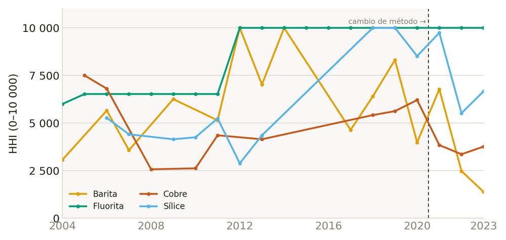
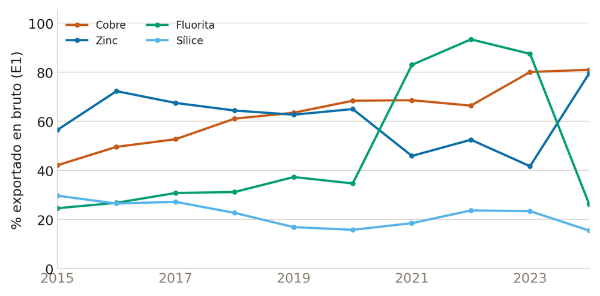
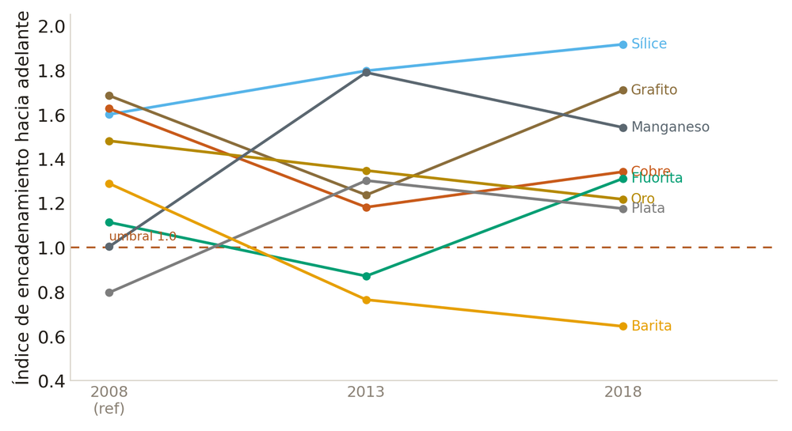

Los descriptores no son estáticos: la dimensión temporal es parte del hallazgo · 1992–2025 según la fuente
Concentración (HHI), 2004–2023

fluorita→monopolio 2012 · barita baja tras 2021
Exportación en bruto, 2015–2024

% E1 sobre exportación total
Encadenamiento (Ghosh), 3 cortes

2008 (ref) → 2013 → 2018
Lecturas
- CCV del cobre ≈ 0.22 durante 33 años (diapositiva anterior): la posición en la cadena no se mueve con los ciclos de precio — la firma del enclave.
- Ghosh 2008→2013→2018: patrón estable (sílice, grafito, cobre arriba; barita abajo).
- Concentración: fluorita salta a monopolio en 2012; barita se desconcentra tras 2021.
- Comercio: el cobre se exporta cada vez más en bruto (~42%→~80%).